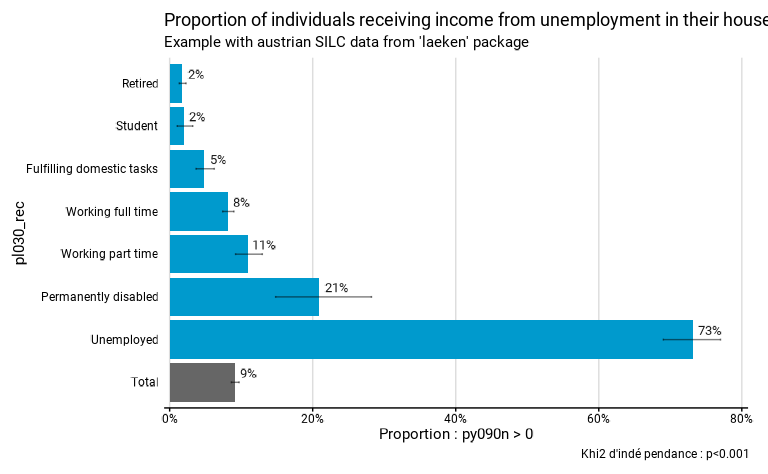
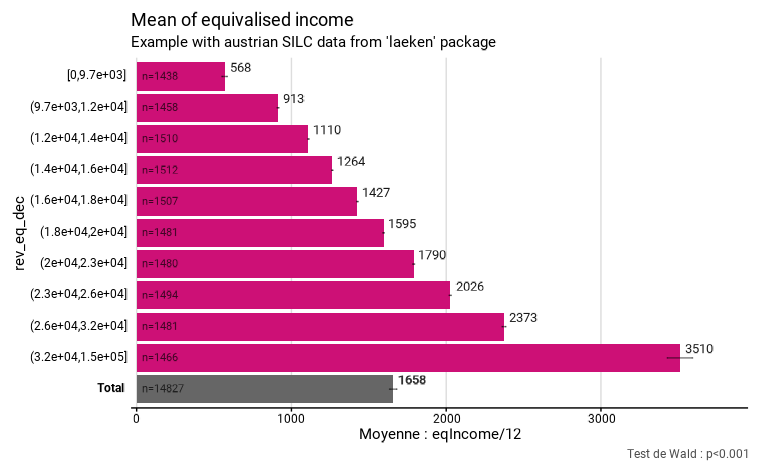
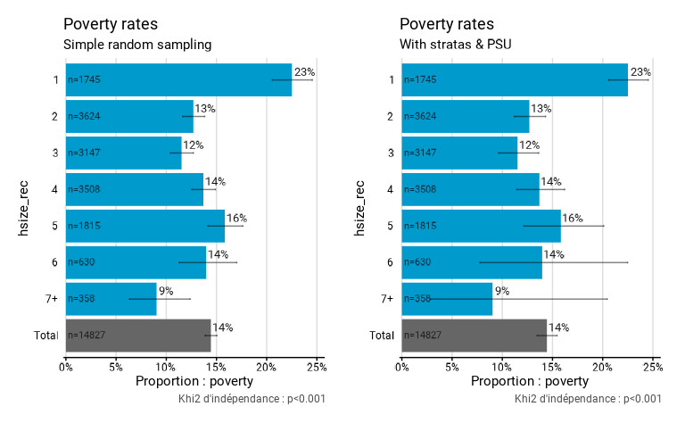

L’objectif de fonctionr est de faciliter la manipulation
de données individuelles issues de sondages avec un design complexe,
c’est-à-dire de prendre en compte facilement la stratification, les
unités primaires d’échantillonnage (PSU) et la pondération dans le
calcul des indicateurs et les mesures d’incertitude (les intervalles de
confiance, par exemple).
Préambule
Qu’est-ce qu’un sondage ?
Pour produire des informations sur la population, on réalise souvent des sondages sur un échantillon, sur lequel on réalise une enquête. On parle de sondage dès que l’on enquête un échantillon, c’est-à-dire un sous-ensemble de la population. Le mot “sondage” est souvent associé aux enquêtes pré-électorales ou d’opinion. Les sondages ne se limitent en réalité pas à ces domaines : les grandes enquêtes européennnes SILC, EFT, EWCS, PISA, ESS… sont par exemple des sondages.
On enquête un échantillon plutôt que la population pour des raisons pratiques et financières : enquêter toute la population coûte un prix astronomique, et est très compliqué à organiser (nécessite un grand nombre d’enquêteur-trice-s, qui doivent réaliser des nombreux déplacements pénibles, etc.). Par ailleurs, les enquêtes exhaustives (= recensements) ne peuvent être réalisées qu’à des périodes relativement espacées et sont limitées en terme de contenu, pour les raisons pratiques évoquées.
Cependant, travailler sur un échantillon implique des procédures complexes dans l’analyse, qui demandent la mobilisation et la compréhension de la théorie de la statistique inférentielle. Sa mise en pratique ne s’improvise pas et demande un apprentissage minimal : c’est l’objet de cette page d’en faire l’introduction.
Qu’est-ce qu’un bon échantillon (probabiliste) ?
Un échantillon est souvent présenté comme un “modèle réduit” de la population, dont la qualité première serait la “représentativité”, c’est-à-dire la même répartition des catégories que dans la population. Il s’agit de la manière dont a été popularisée la condition de validité des enquêtes, qui est pourtant assez trompeuse ! En réalité, les statisticiens n’utilisent pas la notion de “représentativité”, et celle-ci est souvent utilisée à tort et à travers. Par exemple, il est souvent utile de sur-représenter ou sous-représenter certaines catégories de la population dans le sondage, ce qui engendre de facto que l’échantillon n’est plus “représentatif” au sens strict. De plus, la représentativité de l’échantillon est impossible à connaître pour les éléments inconnus, ceux pour lesquels on réalise justement l’enquête !
Ce qui est réellement important dans un sondage, c’est :
Que la sélection des individus soit aléatoire, et que cette sélection aléatoire s’opère selon un plan défini et connu.
Qu’il n’y ait pas de biais dans l’échantillon, possiblement du fait d’un taux de réponse plus bas de certaines catégories par rapport à d’autres.
Que la diversité des situations dans l’échantillon soit aussi riche que celle dans la population.
En comparaison de ces éléments, la taille de l’échantillon, critère dont on parle beaucoup, est peu garant de qualité. Un petit échantillon bien fait est beaucoup plus intéressant qu’un grand échantillon mal construit, dont les résultats seront biaisés et peu utilisables.
Un hasard prédictible
La fluctuation d’échantillonnage
L’échantillon doit être le produit d’une sélection aléatoire. En tout cas, c’est la condition pour pouvoir faire de l’inférence statistique, c’est-à-dire induire de manière fiable les caractéristiques de la population sur la base d’un échantillon, qui n’en est qu’une sélection partielle ! Il existe des échantillons non probabilistes, mais inférer les caractéristiques observées à la population est beaucoup moins solide et beaucoup plus risqué.
Il faut savoir que la sélection d’un échantillon est soumise au hasard, qui implique une fluctuation d’échantillonnage. Autrement dit, le hasard de l’échantillonnage fait que l’on n’obtient jamais exactement le vrai résultat, celui dans la population ! C’est la raison pour laquelle on parle toujours d’estimation lorsqu’on s’intéresse au résultat dans un échantillon. Par exemple, des groupes qui ont en réalité la même moyenne dans la population pourraient obtenir des estimations de leurs moyennes différentes dans l’échantillon. On comprend que le risque est de conclure trop rapidement à une différence entre ces groupes dans la population sur base des résultat dans l’échantillon, alors que cette différence n’existe tout simplement pas !
Il s’agit là de l’élément qui rend l’analyse de données d’enquête plus compliquées que celle de chiffres issus de la population. L’intérêt de la statistique inférentielle est qu’elle permet de réduire largement le risque de se tromper. Elle permet notamment de calculer des intervalles de confiance, et de procéder à des tests statistiques, qui permettent de baliser ce risque.
La distribution d’échantillonnage
Par quel miracle l’inférence est-elle possible, sans même connaître les caractéritiques de la population ? C’est parce que le hasard suit des règles connues que l’on peut faire de l’inférence. Si on tire des milliers d’échantillons aléatoires à partir de la même population, on peut observer comment se distribue la moyenne de ces échantillons. Il s’agit en termes statistiques de la distribution d’échantillonnage. Et la distribution d’échantillonnage de la moyenne suit une loi bien connue : une loi normale. Par ailleurs, la moyenne de cette distribution est égale à la moyenne réelle ! Malgré la fluctuation d’échantillonnage, l’estimation de la moyenne dans l’échantillon tend donc à être égale à la moyenne réelle dans la population. On dit que la moyenne d’échantillon est un estimateur non biaisé de la moyenne dans la population. Ce sont précisément ces éléments qui rendent possibles l’inférence et qui permettent de calculer des intervalles de confiance et de procéder aux tests statistiques.
Il faut bien avoir à l’esprit que la distribution d’échantillonnage est estimée théoriquement selon les caractéristiques de l’échantillon. Il faut donc toujours bien faire attention à ce que les conditions soient remplies pour estimer correctement la distribution d’échantillonnage (conditions de distribution des variables, du nombre d’effectifs, etc.). La distribution d’échantillonnage ne suit par exemple pas toujours une loi normale. Par ailleurs, même lorsqu’elle est normale, la distribution d’échantillonnage peut avoir une variance (“largeur”) plus ou moins grande, notamment si la variance de la variable dont on estime la moyenne est grande. Il est facile de le comprendre en imaginant une situation où la variance est nulle : si tous les individus ont la même caractéristique dans la population, la distribution d’échantillonnage ne présentera qu’une unique valeur et l’estimation de la moyenne de cette caractéristique dans un échantillon sera très précise puisqu’elle sera toujours la même.
Toute la difficulté de la statistique inférentielle est de bien estimer quelle serait la distribution d’échantillonnage (forme, caractéristiques) des estimateurs que l’on utilise (= les résultats que l’on calcule : des moyennes, proportions…), afin de pouvoir faire des tests statistiques ou calculer des intervalles de confiance adaptés aux données.
Outils de la statistique inférentielle
Tests d’hypothèse
Imaginons que l’on veuille être assurés que la différence des moyennes constatée dans l’échantillon entre 2 groupes est réelle (= se retrouve dans la population). Pour cela, on peut faire un test d’hypothèse. Les tests d’hypothèses reposent entièrement sur les caractéristiques de la distribution d’échantillonnage. Le test agit en quelque sorte comme une expérience de pensée qui repose sur cette question : “et s’il n’y avait en réalité pas de différence malgré celle que l’on constate ?” le test fournit la probabilité de trouver une différence au moins aussi grande que celle que l’on constate alors qu’il n’y en a en réalité aucune dans la population (sous l’hypothèse que la différence entre les deux groupes vaut 0, si on le dit plus formellement). Le principe est que si cette probabilité est trop faible, alors on rejette l’hypothèse que les groupes seraient les mêmes dans la population (et on conclut alors à une différence). Cette expérience de pensée est l’astuce qu’on trouvée les statisticiens pour prendre une décision en l’absence d’autres éléments. La contrepartie de cette “astuce” est néanmoins forte : l’échantillon doit être aléatoire et non biaisé, et on doit connaître le type de sélection aléatoire (= le plan de sondage), pour estimer correctement la distribution d’échantillonnage.
Intervalles de confiance
Un autre élément fondamental de la statistique inférentielle est l’intervalle de confiance. Celui-ci est souvent présenté comme l’intervalle dans lequel il y a X % de chance que se situe la valeur réelle. Cette interprétation n’est pas correcte, car la valeur réelle est une constante : elle est ou n’est pas dans l’intervalle. La probabilité est donc soit de 100%, soit de 0%. L’objectif de l’intervalle de confiance est en réalité de montrer que notre mesure ponctuelle dans l’échantillon est un produit de la fluctuation d’échantillonnage, et qu’elle est assortie d’une incertitude. L’intervalle de confiance rappelle que si on avait tiré un autre échantillon aléatoire, la valeur du résultat dans l’échantillon aurait été différente ! Il invite ainsi à considérer le résultat non comme une valeur, mais une plage de valeurs possibles.
Techniquement, l’intervalle de confiance est déterminé sur base de l’estimation de la distribution d’échantillonnage et est par construction centré autour de la moyenne d’échantillon. Il indique toutes les valeurs possibles de la moyenne d’échantillon si la vraie moyenne était celle que l’on observe, avec la distribution d’échantillonnage que l’on estime dans l’échantillon. Mais il faut bien se rendre compte que l’on estime tout cela via l’échantillon dont on dispose, lui-même soumis à la fluctuation d’échantillonnage : on est peut-être dans le cas où la moyenne d’échantillon est fort éloignée de la moyenne réelle ou celui où la distribution d’échantillonnage est mal estimée via l’échantillon ; l’intervalle de confiance peut alors ne pas comprendre la vraie valeur !
L’intervalle de confiance se réfère en réalité à une perspective d’échantillonnage répété : un intervalle de confiance à un niveau de confiance de X % est un intervalle qui capture la valeur réelle dans la population dans X % des échantillons, si on répétait l’échantillonnage un grand nombre de fois.
Comprendre précisément ce qu’est un intervalle de confiance permet de mieux comprendre les résultats obtenus. Cela permet notamment de se rendre compte que tendanciellement, si tout est fait dans les règles de l’art, 5% des intervalles de confiance dans un rapport ne comprennent PAS la vraie valeur ! C’est peu et à la fois beaucoup… Mais c’est inévitable et c’est l’erreur minimale : si les intervalles de confiances sont mal estimés, cette erreur est certainement supérieure. Si les intervalles de confiance ne sont pas calculés du tout, alors, strictement parlant, la valeur estimée dans l’échantillon est toujours erronée : elle n’est jamais exactement celle de la population. C’est la raison pour laquelle il est plus cohérent de considérer les résultats issus d’un échantillon comme des plages possibles.
Notre package fonctionr produit à la fois les
intervalles de confiance et un test statistique le plus adapté au calcul
demandé, sur base du design réel de l’enquête. Ci-dessous, on calcule la
proportion à recevoir des revenus du chômage (py090n
supérieurs à 0). On indique que les strates sont les régions
(strata = db040) et les PSU sont les ménages
(ids = db030).
# Loading of data
data(eusilc, package = "laeken")
# Recoding eusilc$pl030 into eusilc$pl030_rec
eusilc$pl030_rec <- NA
eusilc$pl030_rec[eusilc$pl030 == "1"] <- "Working full time"
eusilc$pl030_rec[eusilc$pl030 == "2"] <- "Working part time"
eusilc$pl030_rec[eusilc$pl030 == "3"] <- "Unemployed"
eusilc$pl030_rec[eusilc$pl030 == "4"] <- "Student"
eusilc$pl030_rec[eusilc$pl030 == "5"] <- "Retired"
eusilc$pl030_rec[eusilc$pl030 == "6"] <- "Permanently disabled"
eusilc$pl030_rec[eusilc$pl030 == "7"] <- "Fulfilling domestic tasks"
eusilc_prop <- prop_group(
eusilc,
group = pl030_rec,
prop_exp = py090n > 0,
strata = db040,
ids = db030,
weight = rb050,
reorder = T,
title = "Proportion of individuals receiving income from unemployment in their household",
subtitle = "Example with austrian SILC data from 'laeken' package"
)Les intervalles de confiance et le résultat du test statistique sont
affichés sur le graphique. Dans le cas de prop_test(), le
test d’hypothèse est un khi2 avec comme hypothèse nulle l’égalité de
toutes les proportions.
eusilc_prop$graph
Les intervalles de confiance se trouvent sous forme de données dans
le dataframe tab avec les résultats :
eusilc_prop$tab
#> # A tibble: 8 × 11
#> pl030_rec prop prop_low prop_upp n_sample n_true_weighted
#> <fct> <dbl> <dbl> <dbl> <int> <dbl>
#> 1 Fulfilling domestic tasks 0.0485 0.0369 0.0624 1207 31048.
#> 2 Permanently disabled 0.209 0.148 0.282 178 21975.
#> 3 Retired 0.0177 0.0134 0.0229 3146 31988.
#> 4 Student 0.0194 0.0106 0.0323 736 7666.
#> 5 Unemployed 0.732 0.690 0.770 518 221878.
#> 6 Working full time 0.0818 0.0741 0.0899 5162 234629.
#> 7 Working part time 0.110 0.0921 0.130 1160 69869.
#> 8 Total 0.0916 0.0863 0.0971 12107 619054.
#> # ℹ 5 more variables: n_true_weighted_low <dbl>, n_true_weighted_upp <dbl>,
#> # n_tot_weighted <dbl>, n_tot_weighted_low <dbl>, n_tot_weighted_upp <dbl>Les résultats du test se trouvent dans l’objet test.stat
:
eusilc_prop$test.stat
#>
#> Pearson's X^2: Rao & Scott adjustment
#>
#> data: NextMethod()
#> F = 475.2, ndf = 5.9608, ddf = 35711.0201, p-value < 2.2e-16Ce qui influence la précision statistique :
Trois éléments influencent la précision statistique (entendue comme p-valeur d’un test et taille d’un intervalle de confiance).
1° La manière dont la (ou les) variable(s) se distribue(nt) dans la population
Pour une moyenne, plus la variance de la variable d’intérêt est grande, plus l’intervalle de confiance le sera aussi. Cet effet est important, mais par définition on ne peut pas le contrôler. Voici par exemple la moyenne du revenu équivalent par décile de revenu, calculé à partir de SILC en Autriche. Les effectifs de l’échantillon pour chacun des déciles sont semblables. Pourtant, les intervalles de confiance sont différents. On remarque notamment que le dernier décile a un intervalle plus grand. Cela indique indirectement que la variance de cette variable est plus élevée pour le dixième décile (ce qui est cohérent, les revenu s’étendant jusque très haut pour cette dernière catégorie).
Cet élément est notamment la raison pour laquelle on stratifie un échantillon, c’est-à-dire qu’on découpe la population en strates dans lesquelles on va faire des tirages aléatoire séparés (voir plus bas). Dans ce cas, on pourrait augmenter le taux de sondage dans le 10ème décile, pour augmenter la précision des indicateurs relatifs au revenu pour ce décile (ce qui se manifesterait pour une diminution de l’intervalle de confiance). Ce point renvoie au fait qu’il est important de construire un échantillon dont on maximise la diversité !
# Creation of deciles
svyeusilc <- svydesign(id = ~db030, strata = ~db040, weights = ~rb050, data = eusilc)
quant <- svyquantile(~eqIncome, svyeusilc, quantiles = seq(.1, .9, .1), ci = F)[[1]]
eusilc$rev_eq_dec <- cut(
eusilc$eqIncome,
breaks = c(min(eusilc$eqIncome), quant, max(eusilc$eqIncome)),
include.lowest = T,
dig.lab = 0
)
# Computation with fonctionr
eusilc_mean <- mean_group(
eusilc,
group = rev_eq_dec,
quanti_exp = eqIncome / 12,
strata = db040,
ids = db030,
weight = rb050,
show_n = T,
title = "Mean of equivalised income",
subtitle = "Example with austrian SILC data from 'laeken' package",
)
eusilc_mean$graph
2° La taille de l’échantillon
Un échantillon plus grand sera plus précis. Apportons cependant deux précisions.
Premièrement, contrairement à ce qu’on imagine parfois intuitivement , le taux de sondage (= la part de la population interrogée) n’a pas d’effet. Ainsi, un échantillon de 1000 personnes dans une commune de Belgique sera aussi précis (pour dire des choses sur les habitants de cette commune) qu’un échantillon de 1000 personnes aux États-Unis (pour dire des choses sur les Américains). En théorie, il y a un léger effet du taux de sondage quand celui-ci est très important - par exemple si l’on constitue un échantillon reprenant 10%, 20% ou 50% de la population de référence. Mais dans la pratique, nous n’avons jamais été confrontés à un échantillon avec un taux de sondage si grand. Peut-être que si on a les moyens de constituer un échantillon de 50% de la population, on a les moyen d’interroger tout le monde à l’aide d’un recensement exhaustif.
Deuxièmement, la précision dépend de la racine carrée de la taille de l’échantillon. Cela implique un rendement décroissant : doubler la taille de l’échantillon n’augmente la précision que de 40%. Par conséquent, il est illusoire de vouloir atteindre des niveaux de précisions très élevés à partir d’enquêtes. La plupart des enquêtes ont des tailles d’échantillon tournant autour de quelques milliers de répondants, ce qui est suffisant pour pouvoir en tirer des informations utiles, mais sans que ce soit trop coûteux. Par ailleurs, l’estimation de la moyenne tend assez vite vers la vraie valeur, montrant qu’il ne faut pas nécessairement d’énormes échantillons pour pouvoir dire quelque chose. C’est d’autant plus vrai que les intervalles de confiance fonctionnent toujours pour de très petits échantillons, nous protégeant de mauvaises interprétations !
3° Le design de l’enquête
En réalité, les enquêtes procèdent rarement, pour des raisons pratiques, par des sondages aléatoires simples. Deux méthodes sont généralement utilisées (souvent conjointement) : la stratification et le sondage en plusieurs degrés.
La stratification permet d’améliorer la précision statistique en tirant plusieurs “sondages” dans des populations différentes. Par exemple (cela se fait fréquemment), pour un échantillon belge on peut tirer séparément des ménages interrogés dans les différentes provinces (et Bruxelles). Cela permet d’éviter d’avoir “par hasard” un peu plus de Limbourgeois et un peu moins de Bruxellois dans l’échantillon. Cela permet aussi d’augmenter le taux de sondage dans certaines strates dont la variance des variables d’intérêt est élevée, et donc d’augmenter la précision des estimations, celle-ci étant dépendante de la variance - voir plus haut. La stratification permet ainsi d’augmenter la diversité présente dans l’échantillon, critère important dans la constitution d’échantillon. Le principe fondamental n’est pas de construire un modèle réduit de la population, mais d’aller chercher l’information là où elle est ! L’augmentation de la précision est d’autant plus élevée que les variables de stratification sont liées aux phénomènes étudiés. Les variables utilisées pour la stratification peuvent être diverses : province, type de ménage, revenu, sexe… la seule contrainte est qu’il est nécessaire de disposer des variables de stratification dans la base de données servant au tirage de l’échantillon.
Les sondages à plusieurs degrés fonctionnent de la manière suivante. On a des unités primaires (le terme de PSU, pour primary sampling units est largement utilisé) qu’on tire au hasard et, ensuite, au sein de ces PSU sélectionnées, on tire des individus qu’on interroge. Par exemple, on tire au hasard 100 communes en Belgique et ensuite tire au hasard, uniquement dans ces communes-là, des personnes qu’on va interroger. Contrairement à la stratification, recourir à des sondages en plusieurs degrés dégrade la précision statistique de l’enquête - parce que les personnes appartenant à un même PSU (ex. habitant une même commune) ont tendance à plus se ressembler que deux personnes prise au hasard dans l’ensemble de l’échantillon. En effet, si on tire 100 personnes en Belgique tirés dans 10 communes tirées aléatoirement, on aura une plus grande variance d’échantillonnage (car l’échantillon tiré sera différent si l’on tire Seraing et Saint-Josse-Ten-Noode que si l’on tire Knokke-Heist et Uccle) que si l’on tire directement 100 personnes en Belgique.
Si cette méthode a un effet négatif sur la précision, pourquoi l’utilise-t-on? la réponse est simple : c’est parce que cela coûte moins cher. En effet, on fait des économies substantielles en recrutant un interviewer pour interroger 10 personnes dans une même commune qu’en lui demandant de courir aux quatre coins de la Belgique pour interroger 10 personnes. Cette réduction des coût permet d’interroger plus de personnes (avec un même budget), ce qui augmente la précision statistique souvent suffisamment pour mener à une balance coût-bénéfices positive. Précisons que c’est moins le cas à Bruxelles car le territoire est bien plus petit, mais en général dans le reste de la Belgique, c’est le cas. Comme de nombreuses enquêtes sont menées au niveau belge, le plan de sondage ne diffère pas entre les régions, à l’exception de l’enquête SILC qui, depuis 2019, n’utilise pas de PSU géographiques à Bruxelles.
Les deux types de PSU les plus fréquents sont des PSU géographiques (communes, parties, de communes, quartiers, secteurs statistiques…) et les ménages. Le dernier cas est illustré dans les données de l’enquête SILC où l’on l’interroge toutes les personnes de 16 ans et plus d’un même ménage. Cet effet est aussi important car les membre d’un même ménage ont tendance à se ressembler (ils vivent dans un même logement, ont des ressources communes, on constate une certaine forme d’homogamie dans les couples…). Dans des domaine de recherches spécifique, on peut être confronté à d’autres types de PSU. Par exemple, en sciences de l’éducation, les écoles ou les classes sont des PSU fréquents. Quand on s’intéresse au travail, il est possible d’être confronté à des entreprises ou établissement comme PSU.
L’effet des PSU sur la variance est d’autant plus fort que les membres d’un même PSU se ressemble d’un point de vue du phénomène étudié. Théoriquement, si la variable étudiée est indépendante de la variable PSU, l’effet du PSU serait nul et il serait moins cher et donc préférable de ne sélectionner qu’un seul PSU. Mais, ce raisonnement est très théorique car nous ne voyons pas d’exemples de phénomène qui serait géographiquement uniforme. Cependant, l’usage des PSU (cela fonctionne assez bien) montre que malgré le fait qu’il y a des différences de moyennes entre unités géographique, il y a quand même une diversité importante au sein des différentes unités géographiques. Ex. même s’il y a des communes avec une population en moyenne plus pauvre et d’autres avec une population en moyenne plus riche, les revenus varient fortement à l’intérieur des communes.
Le graphique ci-dessous montre l’effet de la prise en compte ou non
des strates et PSU. Il s’agit du taux de pauvreté selon la taille des
ménages en Autriche, calculé à partir de SILC. Dans le premier calcul,
On ne prend pas en compte les strates et PSU. Dans le deuxième calcul,
on les prend en compte : on indique que les strates sont les régions
(strata = db040) et les PSU sont les ménages
(ids = db030). Les arguments du design sont passé à srvyr, package que nous
utilisons en interne (qui les passe lui-même à survey). Tous
les arguments de déclaration du design de srvyr sont
opérationnels, voir : http://gdfe.co/srvyr/reference/as_survey_design.html. Il
faut noter que lorsqu’on n’indique ni strate ou PSU,
fonctionr considère qu’il s’agit d’un échantillon aléatoire
simple ; notre package est donc tout à fait adapté à ce genre de
situation.
# Poverty threshold
eusilc$poverty <- NA
eusilc$poverty[eusilc$eqIncome < .6*quant[5]] <- 1
eusilc$poverty[eusilc$eqIncome > .6*quant[5]] <- 0
# Household size
eusilc$hsize_rec <- eusilc$hsize
eusilc$hsize_rec[eusilc$hsize > 6] <- "7+"
eusilc_poverty1 <- prop_group(
eusilc,
group = hsize_rec,
prop_exp = poverty,
weight = rb050,
show_n = T,
title = "Poverty rates",
subtitle = "Simple random sampling",
)
eusilc_poverty2 <- prop_group(
eusilc,
group = hsize_rec,
prop_exp = poverty,
strata = db040,
ids = db030,
weight = rb050,
show_n = T,
title = "Poverty rates",
subtitle = "With stratas & PSU",
)On voit que les pourcentages calculés sont exactement les mêmes. Mais les estimations apparaissent moins précises à droite (si on regarde les intervalles de confiance) lorsque l’on prend en compte les strates et surtout les PSU ; elles sont néanmoins plus justes ! On constate donc que la non considération des strates et PSU peut fortement changer les choses. Ici c’est le cas car le taux de pauvreté est calculé au niveau individuel, mais en affectant à chaque individu le revenu équivalent du ménage. Or, l’enquête SILC est construite avec comme premier niveau un tirage aléatoire de ménages, dans lesquels tous les individus sont ensuite interrogés. Des individus du même ménage ont donc exactement le même revenu ! En ne considérant pas les PSU, on fait comme si ces individus faisaient partie de ménages différents (améliorant la précision des estimations), ce qui est faux. Cela montre la nécessite de bien comprendre le design de l’enquête et ses implications !
eusilc_poverty1$graph | eusilc_poverty2$graph
On constate également que les p-valeurs des deux tests sont différentes :
eusilc_poverty1$test.stat
#>
#> Pearson's X^2: Rao & Scott adjustment
#>
#> data: NextMethod()
#> F = 26.384, ndf = 5.9449, ddf = 88138.3758, p-value < 2.2e-16
eusilc_poverty2$test.stat
#>
#> Pearson's X^2: Rao & Scott adjustment
#>
#> data: NextMethod()
#> F = 6.5896, ndf = 5.072, ddf = 30386.134, p-value = 3.379e-06